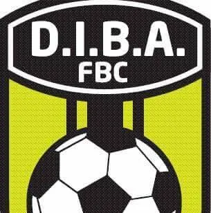

El Escudo Sagrado
Cada trazo, color y estrella guarda la historia viva de nuestra academia, el orgullo de Barranquilla y la pasión inquebrantable de nuestros guerreros en el campo.

Un blindaje de honor para el fútbol de formación.
Diseñado en el corazón de Barranquilla, el blasón de DIBA FBC nace como símbolo de protección para cada sueño infantil y juvenil que da sus primeros pasos en una cancha de barrio, transformándose en una armadura de disciplina y superación integral.
Anatomía del Blasón
Conoce el significado técnico y espiritual plasmado en cada uno de los componentes del emblema.
Las Estrellas
ExcelenciaSimbolizan los 3 pilares supremos de nuestra academia: Disciplina para superarse, Talento cultivado día a día y Resiliencia para levantarse tras cada caída en la cancha y en la vida.
El Balón Clásico
EsenciaUbicado exactamente en el centro geométrico. Representa el corazón del club: la redonda como puente educativo, herramienta de paz en las comunidades y el vehículo de alegría para las familias.
El Blindaje
ProtecciónUn perfil heráldico con curvas clásicas y remate inferior agudo. Manifiesta la fortaleza mental del deportista barranquillero y la protección integral que la academia brinda a cada niño.
Siglas y Tipografía
IdentidadDeportivo Internacional Barranquilla. Trazos robustos en tipografía de alto impacto que proyectan presencia competitiva y solidez institucional.
Fuerza & Lealtad
PrincipioLa consigna moral del club. Fuerza no es solo potencia física, sino el temple para no rendirse jamás; lealtad hacia los compañeros, la camiseta, el club y el juego limpio.
Caribe Inmortal
OrigenBarranquilla corre por las venas del diseño: la calidez de su gente, el viento de la arenosa que mece las canchas y la pasión desbordada que solo la costa colombiana sabe imprimir al fútbol.
Colores Institucionales
Haz clic sobre cualquier muestra para copiar el código HEX oficial al portapapeles.
Oro Caribe
Primario • Energía
Amarillo Sol
Acento • Gloria
Azul DIBA
Identidad • Fuerza
Negro Élite
Elegancia • Solidez
Evolución en el Tiempo
Más de una década de perfeccionamiento estético manteniendo intacto el espíritu fundador.
Identidad Fundacional
El primer emblema diseñado a mano para los primeros torneos barriales.

- Trazo original con foco en la energía del amarillo primario.
- Estructura heráldica temprana pensada para camisetas de algodón.
- Sello inicial que acompañó las primeras copas locales.
Renovación Alta Gama
Vectorización milimétrica, balance óptico y acabado digital de élite.
- Curvas vectorizadas adaptadas a pantallas Retina y 4K.
- Armonización cromática con el Oro Caribe y Azul Marino.
- Aplicación oficial en uniformes de competición y trofeos.
Kit de Medios & Descargas
Archivos oficiales en alta resolución autorizados para medios de comunicación, torneos y patrocinadores.
Escudo HD PNG
Máxima resolución sin fondo, ideal para banners, posters, documentos oficiales y publicaciones.

Escudo WebP Liviano
Formato ultra comprimido de última generación para desarrollos web, apps y cargas instantáneas.
Favicon Oficial ICO
Icono de pestaña para navegadores y atajos en teléfonos móviles con múltiples resoluciones.
Guía Rápida de Aplicación de Marca
Contraste seguro: Aplicar preferiblemente sobre fondos oscuros o con suficiente contraste para garantizar la lectura de los destellos dorados.
No deformar: Mantener siempre la relación de aspecto 1:1. No estirar, rotar ni alterar las proporciones de las estrellas ni las letras.
Área de reserva: Dejar un margen libre perimetral equivalente al 20% del ancho del escudo para evitar que otros elementos lo saturen.